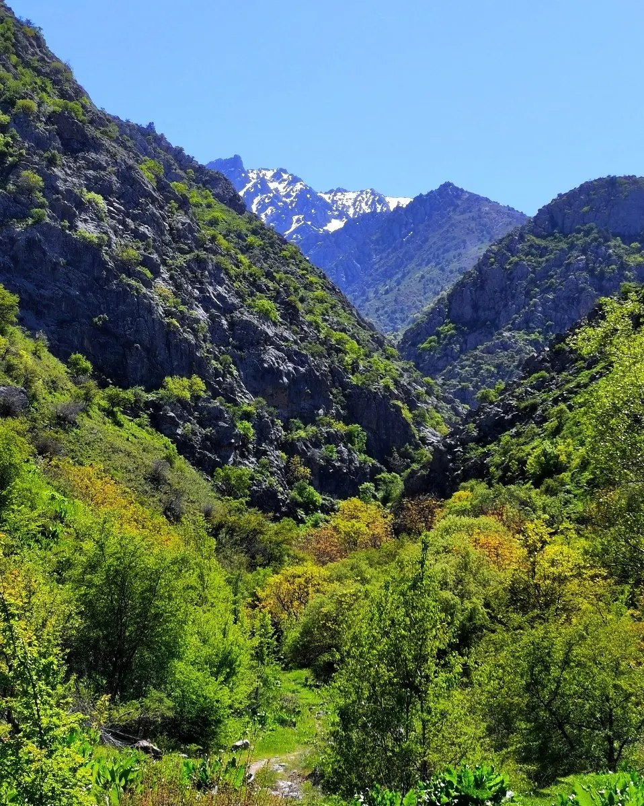
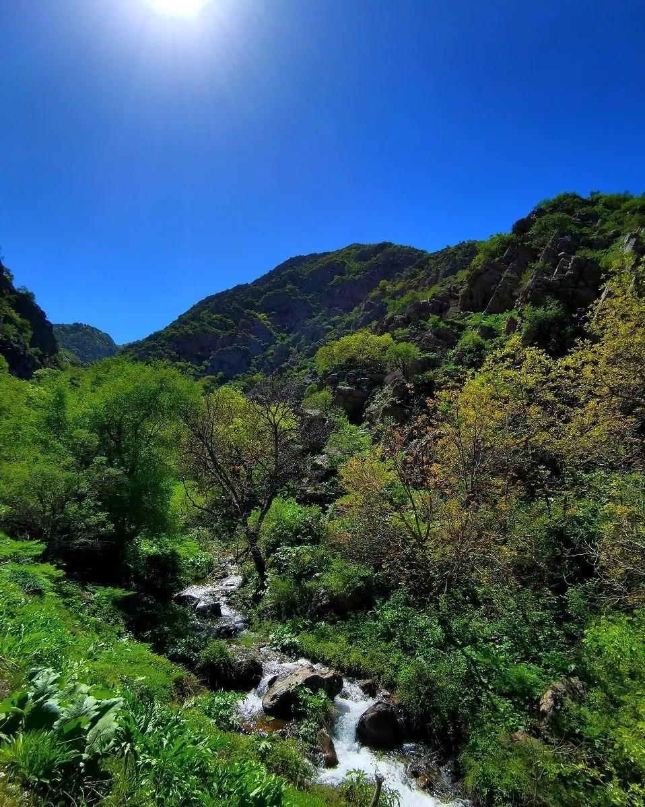
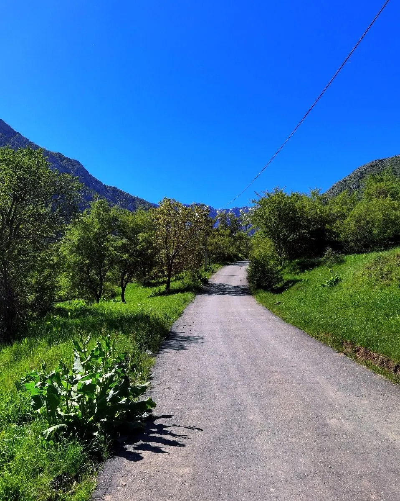
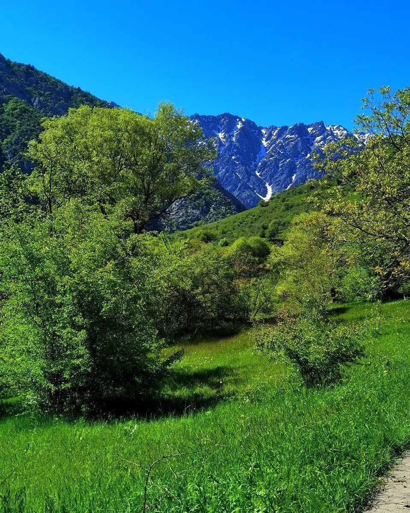
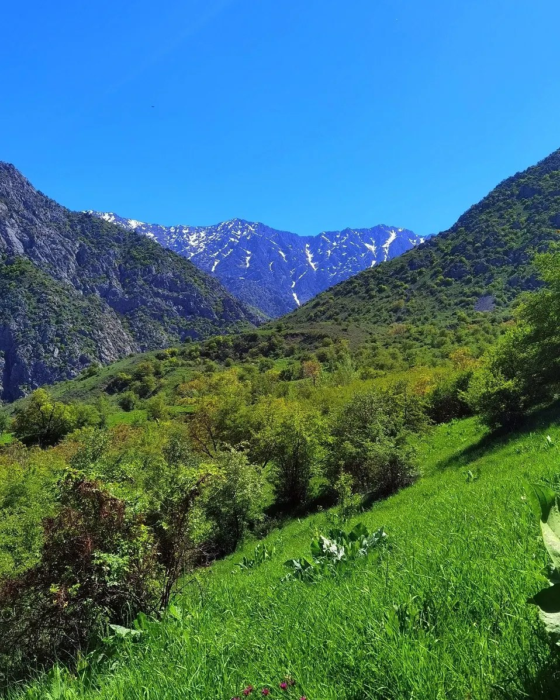
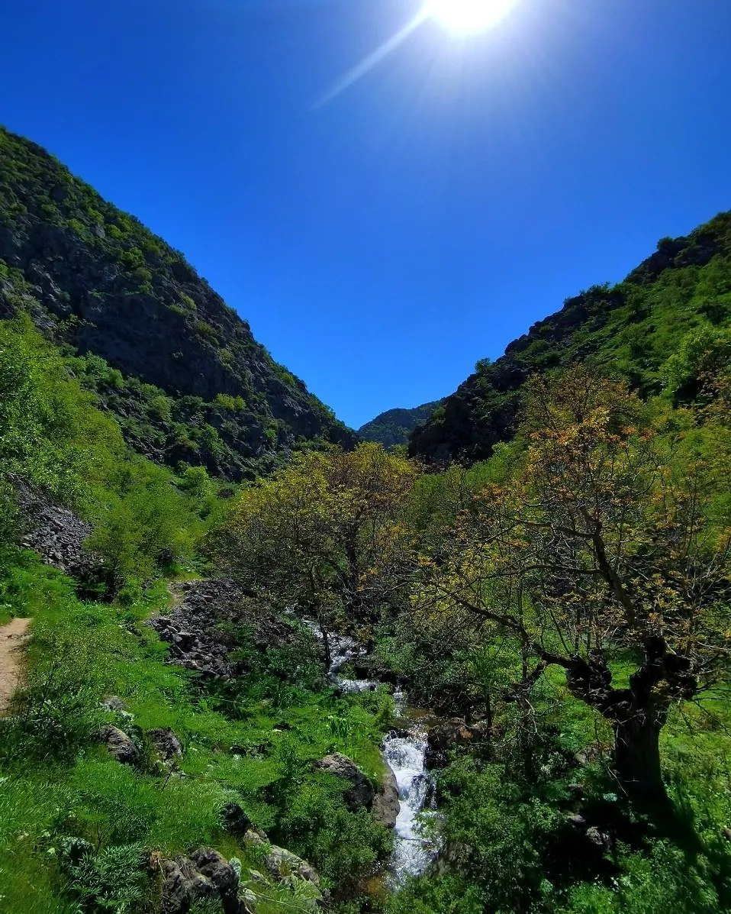
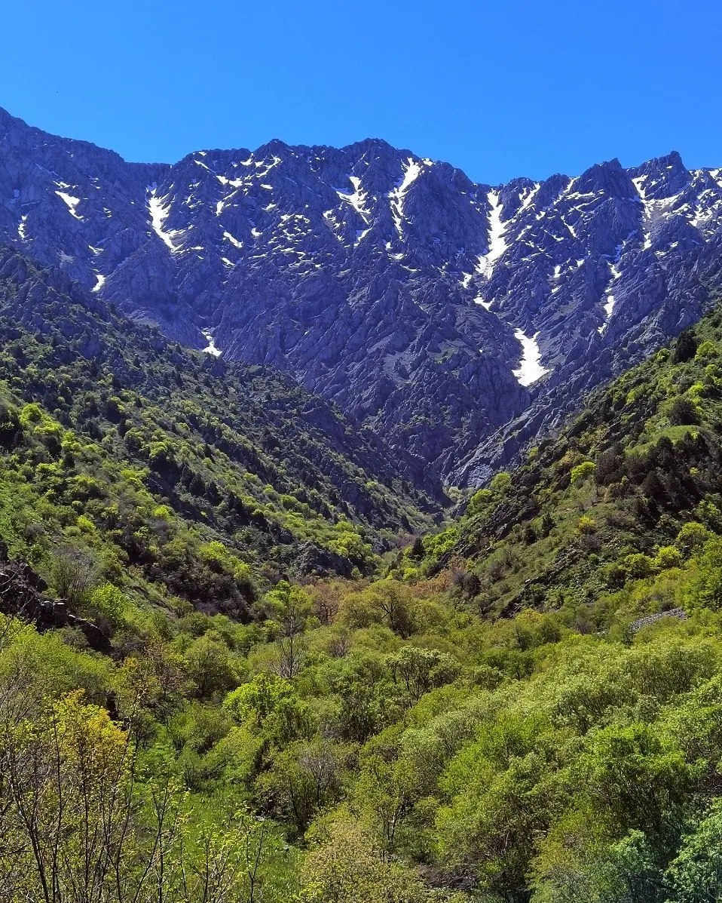
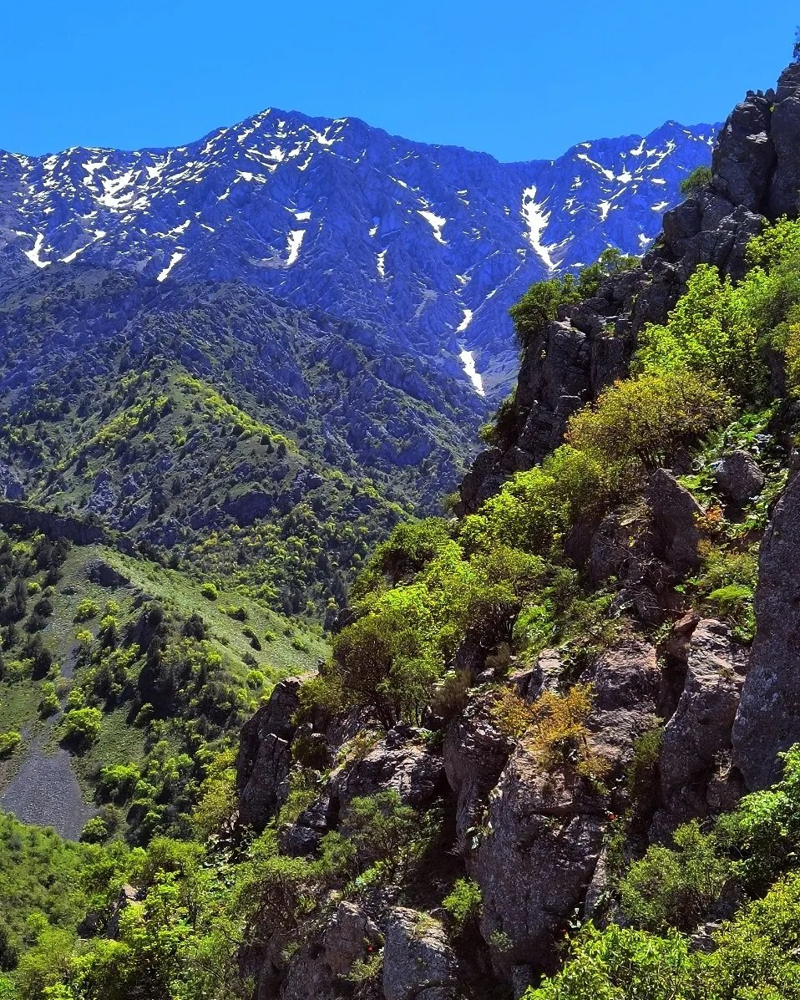

Surxondaryo
Surxondaryo, Uzbekistan · March 31, 2025









A hike through green mountain valleys, streams, and snow-capped peaks in Surxondaryo.
Surxondaryo, Uzbekistan · March 31, 2025








A hike through green mountain valleys, streams, and snow-capped peaks in Surxondaryo.